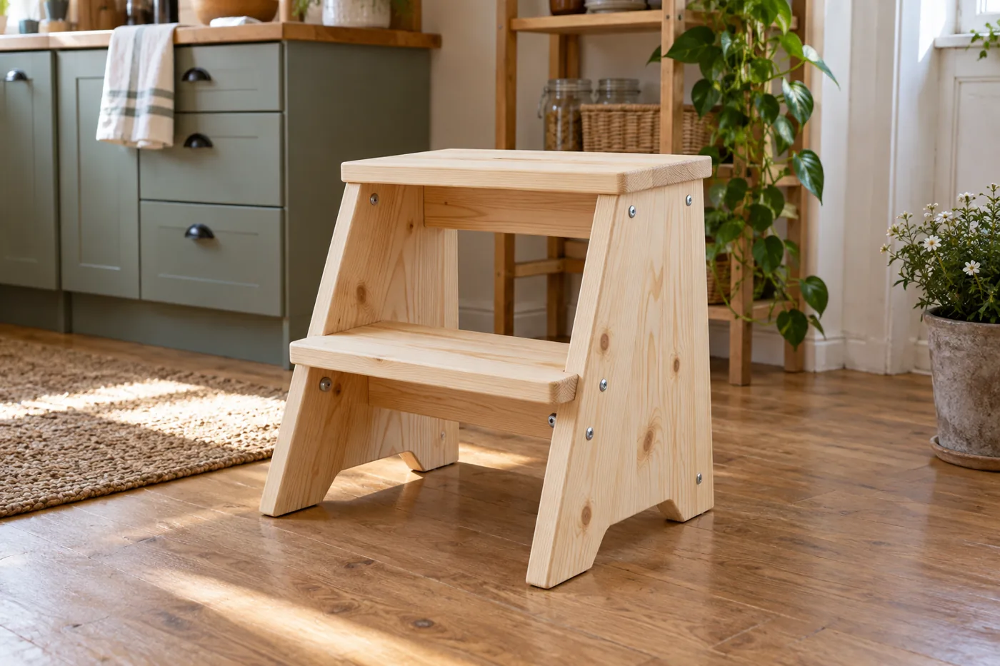
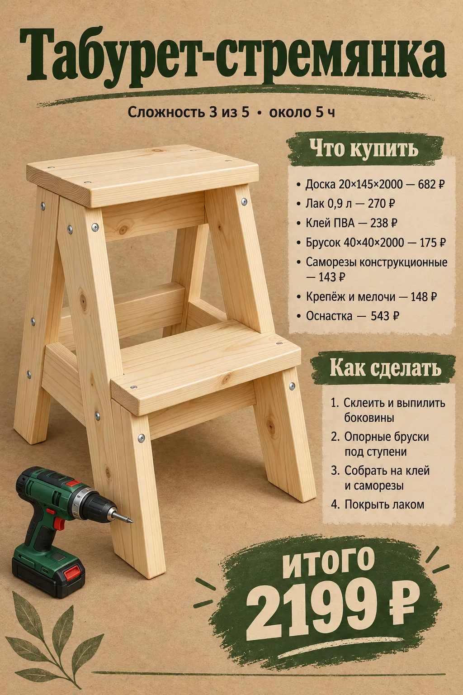
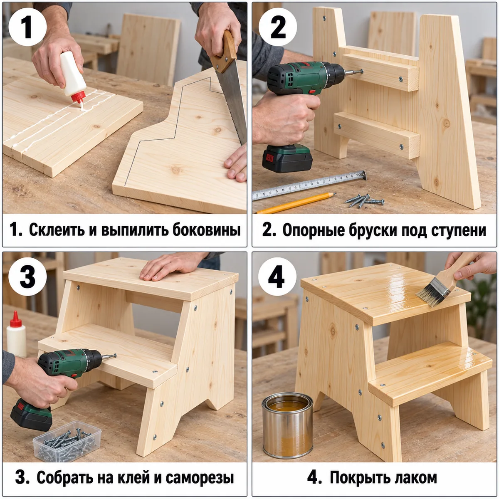

★ топ-10 · дерево
Табурет-стремянка
Стремянка-табурет с двумя ступенями: боковины из доски, ступени на брусках, конструкционные саморезы.
2199 ₽смета с оснасткой
- Склеить и выпилить боковины
- Опорные бруски под ступени
- Собрать на клей и саморезы
- Покрыть лаком
Плакат и инструкция


Как сделать подробно
- Боковины: из доски 20×145 склеить 2 пакета по 2 доски, разметить лесенку и выпилить ножовкой.
- Ступени 400 мм из доски 20×145 по 2 на ступень.
- Под ступени прикрутить опорные планки из бруска 40×40.
- Собрать на клей и конструкционные саморезы, сзади — диагональная распорка.
- Лак в 2 слоя, на ступени — антискользящие полосы.
Что купить в «Петровиче»
| Позиция | Зачем | Кол-во | Цена | Сумма |
|---|---|---|---|---|
| материал | ||||
| Доска 20×145×2000 Доска сухая строганая 20х145х2000 мм хвойные породы сорт АВ ФГИС ЛК · арт. 102355 |
доска 20×145×2000 | 2 шт | 341 ₽ | 682 ₽ |
| Брусок 40×40×2000 Брусок сухой строганый 40х40х2000 мм сорт АВ хвойные породы профилированный · арт. 1092607 |
брусок 40×40×2000 | 1 шт | 175 ₽ | 175 ₽ |
| крепёж | ||||
| Саморезы 51 мм Саморезы ГД 51x3,5 мм (18 шт.) · арт. 125772 |
саморезы 51 мм | 1 упак | 34 ₽ | 34 ₽ |
| Саморезы конструкционные Саморезы по дереву 40x4,0 мм потайная головка конструкционные (24 шт.) · арт. 160978 |
конструкционные саморезы | 1 упак | 143 ₽ | 143 ₽ |
| отделка | ||||
| Лак 0,9 л Лак алкидно-уретановый паркетный Престиж Wood глянцевый бесцветный 0,9 л · арт. 1098206 |
лак | 1 шт | 270 ₽ | 270 ₽ |
| расходник | ||||
| Карандаш Карандаш строительный малярный Hesler (2 шт.) · арт. 125418 |
карандаш | 1 упак | 30 ₽ | 30 ₽ |
| Шкурка P120 Наждачная бумага Flexione 230х280 мм Р120 влагостойкая · арт. 691898 |
шкурка P120 | 2 шт | 42 ₽ | 84 ₽ |
| Клей ПВА Клей ПВА Момент Столяр Экспресс D2 125 г · арт. 675688 |
клей ПВА | 1 шт | 238 ₽ | 238 ₽ |
| оснастка | ||||
| Бита PH2 Бита Hesler PH2 магнитная 25 мм (882083) · арт. 882083 |
бита PH2 под саморезы | 1 шт | 33 ₽ | 33 ₽ |
| Сверло 3 мм Сверло по дереву спиральное КМ 3х60 мм (966064) · арт. 966064 |
сверло 3 мм: засверловка, чтобы доска не треснула | 1 шт | 42 ₽ | 42 ₽ |
| Ножовка по дереву Ножовка по дереву 400 мм 9 зуб/дюйм средний зуб · арт. 681543 |
ножовка по дереву | 1 шт | 226 ₽ | 226 ₽ |
| Стусло Стусло Сибртех пластиковое 300х65 мм (22571) · арт. 968520 |
стусло: ровный рез 90° и 45° | 1 шт | 143 ₽ | 143 ₽ |
| Рулетка Рулетка с фиксатором 3 м x 16 мм · арт. 159373 |
рулетка | 1 шт | 99 ₽ | 99 ₽ |
| Итого, включая оснастку 543 ₽ | 2199 ₽ | |||
Источник идеи: https://alfales.ru/stati/kak-sdelat-taburet-stremyanku-iz-dereva/. Проект переработан под шуруповёрт 12 В и ручной инструмент.
Инженерная проработка есть ошибки
Параметрическая 3D-модель с настоящими отверстиями, крепёж расставлен по правилам (Eurocode 5, упрощённо для DIY), раскрой с учётом пропила, закупка упаковками. Габарит модели 400×290×450 мм, масса ≈5.91 кг. Прочность не рассчитывалась.


Проверка проекта
- Ошибка: Габарит в описании (шапка текста: 400×350, две ступени, высота 450 мм) 400×350×450 мм, а у модели 290×400×450 мм
- Ошибка: CONFLICT: tread_lo#1 в шаги текста: ступени 400 мм = 400 мм, в детальном описании/модели = 360×145×20 ммКак исправить: выберите один размер и исправьте текст проекта
- Внимание: tread_lo1_cleat1: 4×40 через tread_lo#1 20 мм входит в cleat_lo#1 на 20 мм < рекомендуемых 24 мм (6d)Как исправить: саморез 4×45
- Внимание: tread_lo1_cleat2: 4×40 через tread_lo#1 20 мм входит в cleat_lo#2 на 20 мм < рекомендуемых 24 мм (6d)Как исправить: саморез 4×45
- Внимание: tread_lo2_cleat1: 4×40 через tread_lo#2 20 мм входит в cleat_lo#1 на 20 мм < рекомендуемых 24 мм (6d)Как исправить: саморез 4×45
- Внимание: tread_lo2_cleat2: 4×40 через tread_lo#2 20 мм входит в cleat_lo#2 на 20 мм < рекомендуемых 24 мм (6d)Как исправить: саморез 4×45
- Внимание: tread_hi1_cleat1: 4×40 через tread_hi#1 20 мм входит в cleat_hi#1 на 20 мм < рекомендуемых 24 мм (6d)Как исправить: саморез 4×45
- Внимание: tread_hi1_cleat2: 4×40 через tread_hi#1 20 мм входит в cleat_hi#2 на 20 мм < рекомендуемых 24 мм (6d)Как исправить: саморез 4×45
- Внимание: tread_hi2_cleat1: 4×40 через tread_hi#2 20 мм входит в cleat_hi#1 на 20 мм < рекомендуемых 24 мм (6d)Как исправить: саморез 4×45
- Внимание: tread_hi2_cleat2: 4×40 через tread_hi#2 20 мм входит в cleat_hi#2 на 20 мм < рекомендуемых 24 мм (6d)Как исправить: саморез 4×45
- Внимание: brace_left: 4×40 через panel#2 20 мм входит в торец в brace на 20 мм < рекомендуемых 32 мм (8d)Как исправить: саморез 4×55
- Внимание: brace_right: 4×40 через panel#4 20 мм входит в торец в brace на 20 мм < рекомендуемых 32 мм (8d)Как исправить: саморез 4×55
- Внимание: шов 40 мм — помещается только 1 саморез (соединение будет вращаться) — 2 места: brace_left, brace_rightКак исправить: добавьте клей или уголок
- Внимание: Неоднозначность в исходном описании: Ширина боковины в шапке текста (350 мм) не сходится с моделью: боковина физически состоит из 2 досок по 145 мм (склеенный пакет) = 290 мм, а не 350 мм. Ширина/глубина ступени взята равной этим же 290 мм (2 доски по 145). Конфликт оставлен в claims.
Крепёж по соединениям
| Соединение | Крепёж | Шт. | Заход | Пилот |
|---|---|---|---|---|
| cleat_lo1_panel1 | 3.5×51 | 2 | 31 мм | ⌀2.5 |
| cleat_lo1_panel2 | 3.5×51 | 2 | 31 мм | ⌀2.5 |
| cleat_lo2_panel3 | 3.5×51 | 2 | 31 мм | ⌀2.5 |
| cleat_lo2_panel4 | 3.5×51 | 2 | 31 мм | ⌀2.5 |
| cleat_hi1_panel1 | 3.5×51 | 2 | 31 мм | ⌀2.5 |
| cleat_hi1_panel2 | 3.5×51 | 2 | 31 мм | ⌀2.5 |
| cleat_hi2_panel3 | 3.5×51 | 2 | 31 мм | ⌀2.5 |
| cleat_hi2_panel4 | 3.5×51 | 2 | 31 мм | ⌀2.5 |
| tread_lo1_cleat1 | 4×40 | 2 | 20 мм | ⌀3 |
| tread_lo1_cleat2 | 4×40 | 2 | 20 мм | ⌀3 |
| tread_lo2_cleat1 | 4×40 | 2 | 20 мм | ⌀3 |
| tread_lo2_cleat2 | 4×40 | 2 | 20 мм | ⌀3 |
| tread_hi1_cleat1 | 4×40 | 2 | 20 мм | ⌀3 |
| tread_hi1_cleat2 | 4×40 | 2 | 20 мм | ⌀3 |
| tread_hi2_cleat1 | 4×40 | 2 | 20 мм | ⌀3 |
| tread_hi2_cleat2 | 4×40 | 2 | 20 мм | ⌀3 |
| brace_left | 4×40 | 1 | 20 мм | ⌀3 |
| brace_right | 4×40 | 1 | 20 мм | ⌀3 |
Фактический расход
Доска сухая строганая 20х145х2000: 3252 мм
Брусок сухой строганый 40х40х2000 профилированный: 1527.5 мм
Саморез 3.5×51: 16 шт
Саморез 4×40: 18 шт
Шкурка P120: ≈3.93 лист
Лак: ≈0.28 л
Клей ПВА: ≈0.02 кг